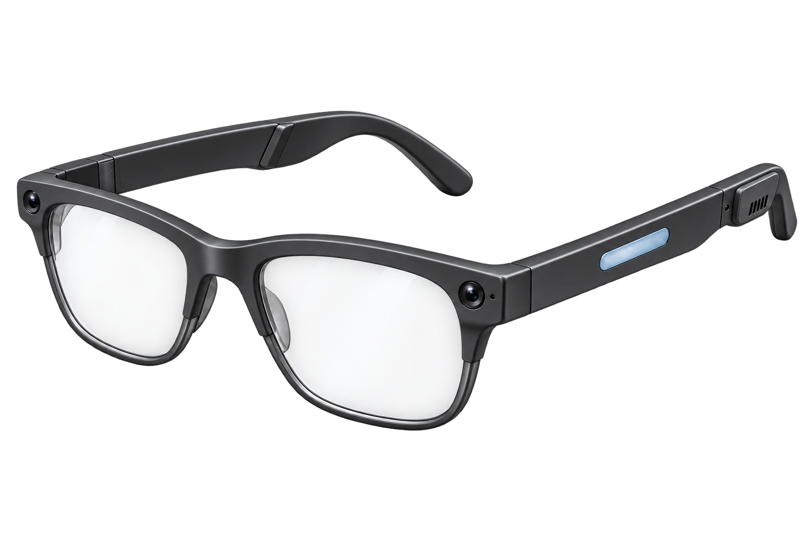
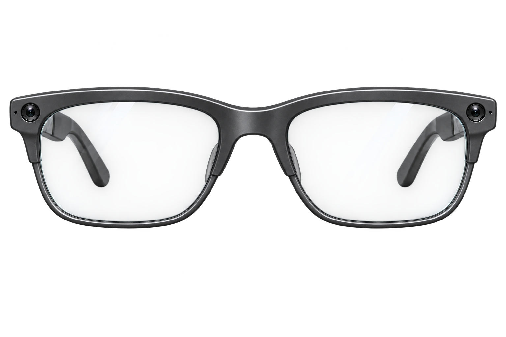
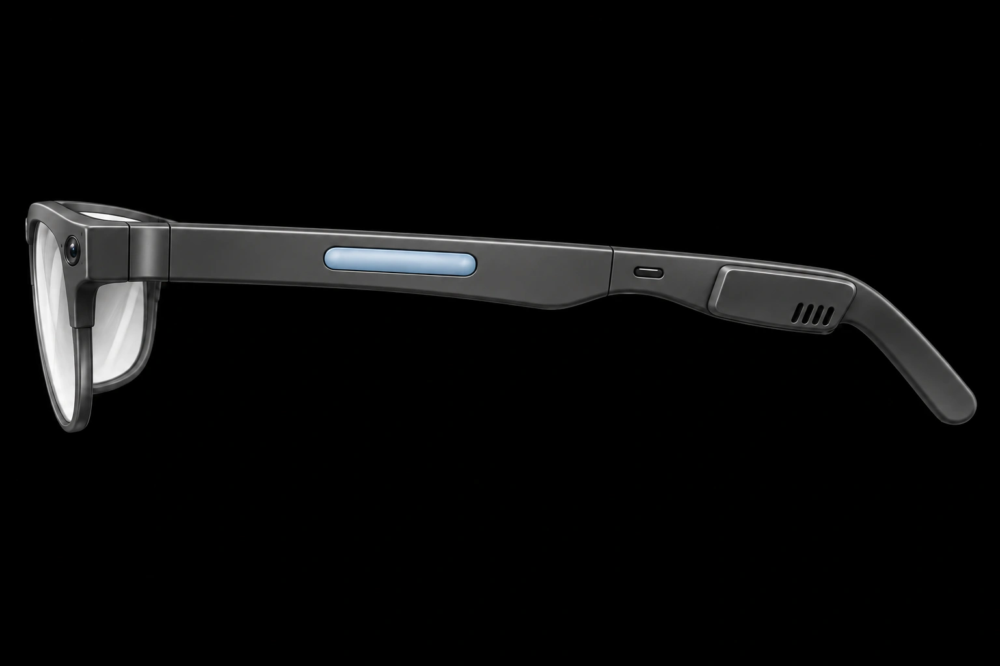
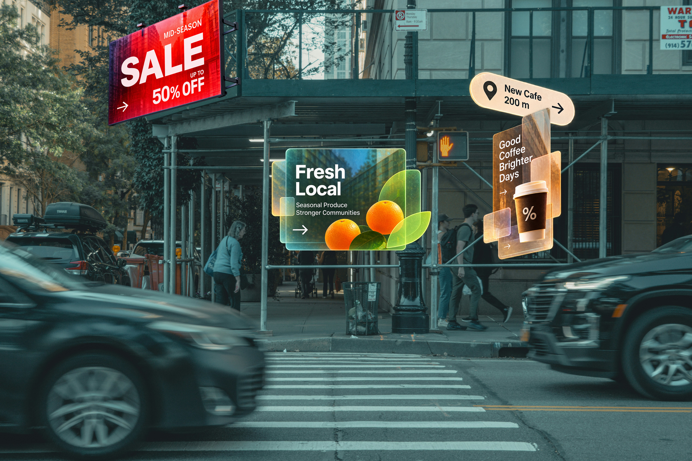
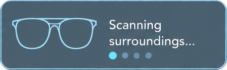
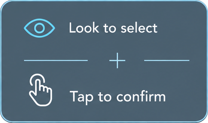
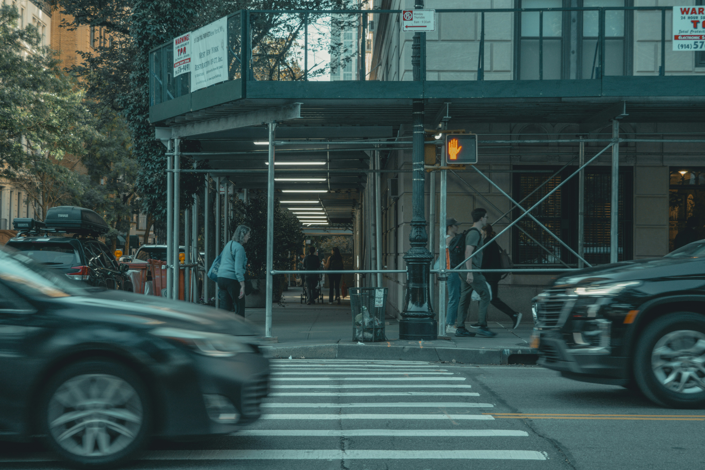
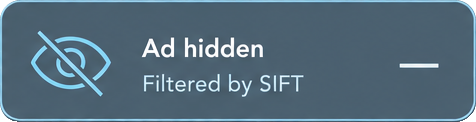

Transparent AR lenses.
An open view of your world.
Meet SIFT.
A quieter view. A more present you.

AI-powered eyewear that filters unwanted AR ads.
Discover the designDesign & technology
Clear lenses. Clean lines.
Technology integrated into the frame.

Graphite. Quietly distinctive.
An open view of your world.
Integrated into the frame.
A smooth, understated finish.

Control at your fingertips.
A clearer view, in four simple steps.





SIFT scans your surroundings and identifies AR advertisements in real time.
The SIFT Experience
See the same street, with and without AR advertising.
Our vision
We believe technology should make
more room for the world around you.
Less competing for your attention.
More of what you choose to see.